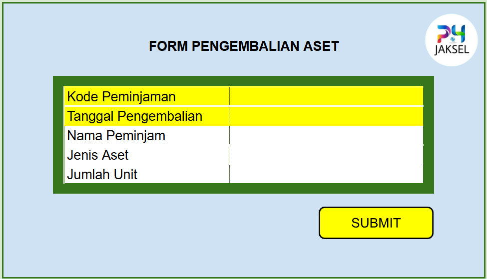
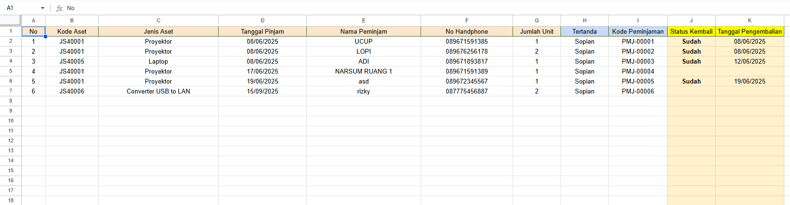
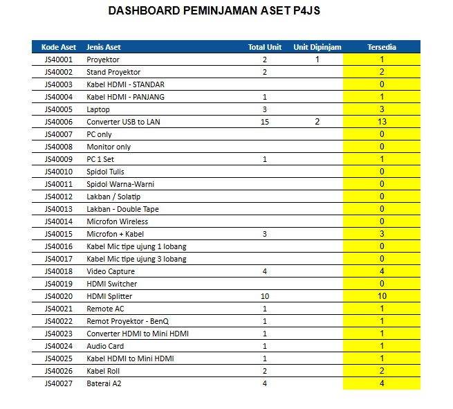

Asset Loan Dashboard for UPT P4JS
An automated asset management system built using Google Sheets & Apps Script, featuring loan/return forms, phone number validation, and real-time stock tracking.
Google Sheets
Apps Script
JavaScript
Automation
Project Overview
This dashboard simplifies the process of borrowing and returning organizational assets. It uses Google Sheets as the database and Apps Script to automate workflows. Features include loan request forms, return forms, validation (phone number check), and real-time stock updates.
Key Features
- Loan & return forms with automated logging
- Real-time asset stock calculation
- Phone number validation for borrowers
- Automated status updates for returned items
- Interactive dashboard for quick overview
Tech & Tools
- Google Sheets
- Apps Script (custom scripting for automation)
- Data validation rules
- Conditional formatting & formulas (SUMIFS, etc.)
Screenshots



Short Code Snippet
var lastRow = sheetLog.getRange("B1").getDataRegion().getLastRow();
lastRow += 1
// Generate kode unik / id peminjaman
var kodeUnik = "PMJ-" + ("00000" + (lastRow - 1)).slice(-5); // PMJ-0001, PMJ-0002, dst
// Ambil nilai dari form input
var jenisAset = sheetForm.getRange("D6").getValue();
// Validasi: kalau D6 kosong, tampilkan alert dan hentikan proses
if (!jenisAset) {
SpreadsheetApp.getUi().alert("Silakan pilih Jenis Aset terlebih dahulu");
return; // Stop proses
}
var kodeAset = sheetForm.getRange("D7").getValue();
var tanggalPinjam = sheetForm.getRange("E10").getValue();
var namaPeminjam = sheetForm.getRange("E11").getValue();
if (!namaPeminjam) {
SpreadsheetApp.getUi().alert("Silakan masukkan Nama Peminjam terlebih dahulu");
return; // Stop proses
}
var nomorHp = sheetForm.getRange("E12").getValue();
//var nomorHpStr = String(nomorHp).replace(/\D/g;'');
const nomorHpStr = String(nomorHp).replace(/\D/g, ''); // hapus karakter non-angka
if (nomorHpStr.length !== 12) {
SpreadsheetApp.getUi().alert("Nomor HP harus terdiri dari 12 digit angka");
return; // Stop proses
}
if (!nomorHp) {
SpreadsheetApp.getUi().alert("Silakan masukkan Nomor HP Peminjam terlebih dahulu");
return; // Stop proses
}
Impact / Outcome
- Improved efficiency in asset tracking
- Reduced errors in loan & return process
- Increased transparency for staff using shared dashboards